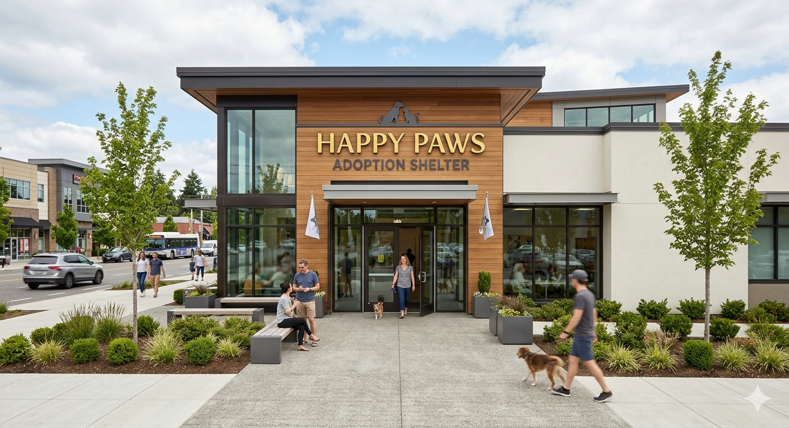

Who we are
Happy Paws is a passionate team of animal lovers, veterinarians, and dedicated volunteers based right here in Melbourne. Founded on the belief that every animal deserves a second chance, our shelter has grown from a small community rescue into a fully-equipped safe haven for dogs, cats, and other small pets. We aren't just a shelter; we are a tight-knit family working around the clock to give voiceless animals the care, dignity, and love they deserve.

Our Purpose
Our daily mission is straightforward: to rescue, rehabilitate, and rehome abandoned, stray, and surrendered animals. We provide essential veterinary care, nutritious food, and behavioral support to ensure every pet that comes through our doors is healthy and ready for their next chapter. Beyond our shelter walls, we also strive to educate the local community on responsible pet ownership and the life-saving impact of adoption.
Our Vision
We envision a future where every cage is empty because every pet has found a loving, permanent home. We are actively working toward a world where animal homelessness is a thing of the past, preventable diseases are eradicated through widespread veterinary access, and the profound bond between humans and animals is universally respected.